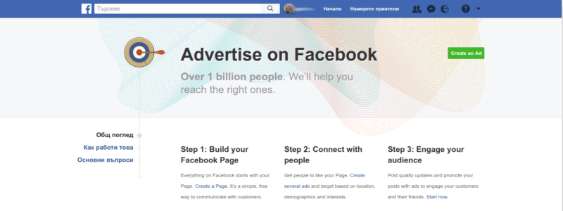

Как да започнем с реклама във Facebook
Така...
Колебаех се дали да публикувам тази статия тъй като в никакъв случай не съм специалист по Facebook реклама, дори не я използвам засега. Но се интересувам от въпроса!
Ето и моите записки във формата на статия, която в най- добрия случай ще ви помогне да се ориетнирате бързо, а няма да ви обърка допълнително или да ви парализира.
За голяма част от развиващия се свят Facebook е интернет.
За по- напредналите страни рекламата с Facebook предлага все повече тънкости, инструменти и предизвикателства.
Видове реклами
Сигурно сте виждали основно два вида реклами: едните се показват отстрани, другите приличат на обикновен пост (dark post) и се познават по етикета "Спонсорирано".
Разбира се рекламата, която прилича на друго, е по- ефективна. Никой не обича да го прекъсват докато гледа бебешки снимки, чете смешки или се възмущава на политическите гафове.
Затова първото правило, което трябва да имате предвид е, че хората идват във Facebook не с намерение да купуват като при Amazon, Google или ebay, а да се забавляват. Така че направете рекламите си щедри, емоционални и цветни!
Как да направите примамливи реклами
Не трябва да пускате само "купи, купи" съобщения.
За дългосрочна стратегия, промотирайте и публикациите в блога си или друго безплатно съдържание.
Градете доверие като показвате отразването на фирмата, събитието или каузата ви в пресата.
Пратете ги на страница, където предлагате някакъв бонус срещу контакт.
Направете атрактивни снимки: ярки цветове, добре осветени и на интересен обект или място, дори и да ви отнеме повече време. Пробвайте да са вертикални, защото заемат повече място, ако се скролва от смартфон, което увеличава шанса да бъдат видяни и да спечелят внимание.
Когато промотирате статус от страницата ви, не качвайте нови снимки, а се уверете, че няма да променяте текста, защото ако промените публикацията може да загубите всичките харесвания и коментари. Запомнете, че искате рекламата ви максимално да прилича на пост, който приятели биха споделили с коментари, вълнения и ангажираност.
Видове публика
Има два вида публика: горещи и студени следи (warm & cold leads). Ще имате повече успех с тези, които вече ви познават. Студени са хората, които се запознават за пръв път с вас чрез рекламата, а горещи са хората, които вече имат представа за съдържанието, стила и офертите ви. Те са имали някакъв досег с уебсайта ви: прочели са ваша статия, посетили са уъркшоп, който сте провели или вече са купили някакъв продукт, който предлагате.
Логично най- лесният начин да превърнете непознати в клиенти е чрез ретаргетинг (повторно свързване с хора, които са проявили някакъв интерес: видяли са вашата sales page, изгледали са някакво видео, абонирали са се за бюлетина ви).
Технически това става с така наречения Facebook пиксел. Слагате код на страниците от сайта или онлайн магазина ви и когато някой ги отвори, следящият пиксел на Facebook се зарежда и отбелява, че този човек е видял тази страница. В зависимост къде го сложите, страницата може да сигнализира на Facebook, че посетителите ви извършват едно от 9 събития (покупка, добавяне в кошница, пълна регистрация, търсене, виждане на съдържание и т.н.).
Първата ви реклама може да е предназначена за хора, които са посетили страницата ви.
Случва се да прочетете интересна статия, да си кажете "Хм, полезно, трябва да го пробвам" и след това да затворите браузъра и никога повече да не се сетите за това.
Подобно нещо не би се случило ако уебсайта, който сте прочели, е имал инсталиран Facebook пиксел, защото в този случай биха могли да ви достигнат с посланието си.
Така може да направите и вие с хора, които са разсеяни и забравят, че са щели да разучат продуктите или услугите ви.
Ако продавате, в рекламата обяснете какви са най- честите възражения или опасения и защо са неоснователни.
Или покажете отзиви на хора, които са ползвали услугите ви и са доволни от резултата.
Ако вече имате имейл адреси например може да импортирате контактите си (custom audience) и да ги използвате да създадете подобна аудитория (lookalike audience)- със същите интереси или поведение.
Освен да включвате, може и да изключвате някои хора. Например ако продавате скъпа оферта, за някои страни може да прегледате дохода и ако е под определен праг, не приемайте парите им. Или ако някой вече се е възползвал от офертата ви, няма смисъл да продължавате да му показвате същите реклами.
Фейсбук показва рекламите ви на хора в зависимост от интересите или действията им.
Те имат интерес да показват колкото се може повече реклами, но не прекалено. Трябва и на човек да не му е толкова неприятно да скролва през новостите, че да го изгубят.
Затова на празници цената се повишава, просто по- малко хора са пред компютъра.
За хора, които за пръв път виждат съобщението ви средната Click Through Rate или CTR може да е 1%, тоест един на всеки сто, които е видял рекламата ви, я щрака за да разбере повече, но за ретаргетинг този процент е около 4%.
Какво да им покажете
Видеото е най- ангажиращо в момента. А ако сложите видео, погрижете се да има субтитри, за да може да се изгледа без да трябва да се включва звука.
Също не се колебайте да използвате емотикони. Продава се с емоциите, а ерата на корави корпоративни приказки и якички е отминала. Днес всеки се стреми да е по- човечен.
Може също да си направите Facebook събитие, което ще ви позволи впоследствие да таргетирате посетителите.
Или си направете бот.
Как да изготвите кампанията
Бъдете конкретни и имайте призив за действие: присъединете се към групата ми, свалете този полезен документ или сложете уебинара, който организирам в календара си.
За да направите възможно най- изгодната кампания, добре е да се запознаете с редактора, наричан още Power Editor. Този инструмент е особено полезен, ако управлявате няколко кампании едновременно. Там може да пипнете и да направите настройки, които не си и представяте, че са възможни. Все пак Facebook има толкова много данни за всеки, най- малкото като ни следи навсъкъде из уеб пространството.
Може да изберете да разпределите бюджета си в зависимост от броя кликания на рекламта (CPC или Cost Per Click) или броя привлечени потенциални клиенти (CPL/A или Cost Per Lead/Aquisition).
Ако последните са под един долар значи се справяте страхотно.
Целта ви може да е между долар и два похарчени за всеки нов записал се.
Колко ще струва
Все пак отговорът на въпроса "Колко трябва да харча за реклама във Facebook?" зависи от бизнеса ви.
Ако давате 10 долара за сдобиване на клиент, но те ви носят по 100 долара значи сте на печалба въпреки по- високата цена.
Водете си сметки и статистика в една екселкса таблица например.
Знайте каква е целта ви: нови абонати или продажби.
Знайте колко време му отнема горе-долу на потенциален клиент да купи.
Знайте на каква стойност един клиент закупува при вас за година примерно.
Целта ни не е само една покупка, а клиент, който избира стоките или услугите ви отново и отново.
Когато създавате рекламата си обърнете внимание на Relevance Score: 6-7 е стандартно. Тази метрика показва доколко Facebook мисли, че рекламата ви ще е от интерес за избраната публика. Сигурно се сещате гадни или нерелевантни банери, които са ви се показвали и как започвате да се възмущавате от марката или продукта, за който става дума. В интерес на всички страни е рекламата да има поне някаква връзка с интересите на целевата група.
За повече информация може да посетите страницата Audience Insights, която ни показва разни данни за хората, на които се показва рекламата ни.
Чакайте поне два дни за да сте сигурни за резултати, защото това е времето, което отнема на Facebook да оптимизира как и на кого да показва рекламата ви.
Каква да бъде стратегията ви
Първата ви цел е ангажираност (взаимодействие с показаното като клик, харесване или коментар), а чак след това конверсии (продажби).
Първо се уверете, че им харесва стила и съдържанието ви преди да решат да купят (и евентуално да си поискат обратно парите).
Всеки обича да е ухажван. Затова започенете с безплатно съдържание, въпреки че говорим за реклама. Какво бързо би решило някаква част от трудностите, пред които са изправени хората, на които помагате. Ако сте диетолог, предложете книжка с рецепти. Ако изготвяте уебсайтове, предложете видео, където обяснявате уебстраниците, които трябва да има всеки. Ако сте специалист по финанси, направете куиз, който определя какъв е стила ви на харчене и т.н.
На този етап или на следващия, поискайте пряка връзка с потенциалния клиент. Питайте ги за имейл, на който да пратите допълнителни материали.
Facebook е непредвидим, така че опитайте се да изградите връзка с новия ви фен, при която да не разчитате на капризните алгоритми на интернет гиганта.
Предложете им интересни статии, пътеки в уебсайта ви и начини да им донесете стойност на страницата с благодарности да кажем.
Но във всеки случай следващата ви стъпка е да се опитате да им продадете нещо малко. Дори печалбата ви да е нищожна или никаква, вече имате нов клиент, който е по- вероятно да си закупи още нещо от вас.
Оттам нататък може да избирате: или предложете допълващи пакети, или пък по- скъпите ви продукти, които даже може да надграждат върху вече установената връзка или да са следващ етап в пътуването на клиента към целта, която са си поставили.
Формулата е всяка стъпка да води логично до следващата:
безплатно съдържание -> безплатно, но срещу имейл -> продажба на нещо малко -> продажба на по- скъпи продукти.
Какво мислите- полезни ли са тези записки?
Какъв е вашият опит?
Възможно е да има някаква неточност, ако забележите- пишете ми, за да я оправя.
Ако сте се занимавали несериозно с маркетинг или сте забравили, припомнете си основите на маркетинга.